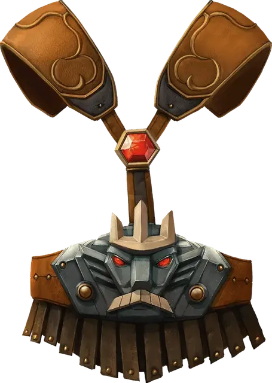

Пояс силы великана
Belt of Giant Strength
Чудесный предмет, редкость варьируется (редкий, очень редкий, легендарный, требуется настройка)

Пока вы носите этот пояс, значение вашей Силы изменяется до значения, даруемого этим поясом. Если ваша Сила без него и так уже равна или превышает силу пояса, тогда пояс не оказывает на вас никакого эффекта.
Пояс бывает шести разновидностей, каждый со своей редкостью и с привязкой к своему виду великана. Пояс силы каменного великана и пояс силы ледяного великана выглядят по-разному, но оказывают одинаковый эффект.
| Вид | Сила | Редкость |
| Холмовой великан | 21 | Редкий |
| Каменный/ледяной великан | 23 | Очень редкий |
| Огненный великан | 25 | Очень редкий |
| Облачный великан | 27 | Легендарный |
| Штормовой великан | 29 | Легендарный |